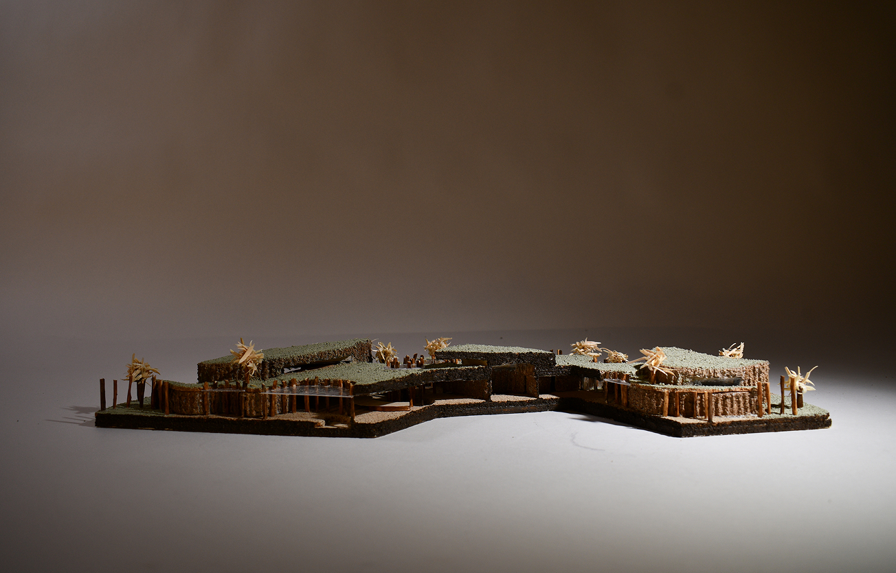
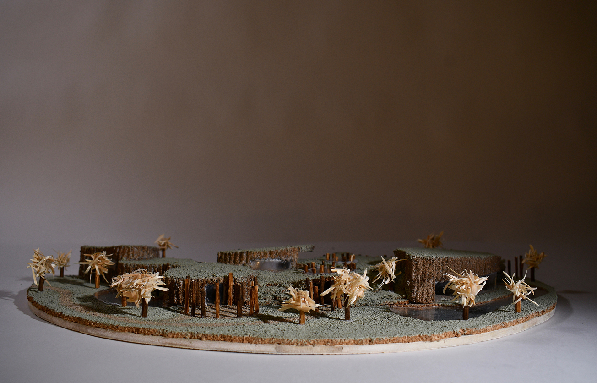
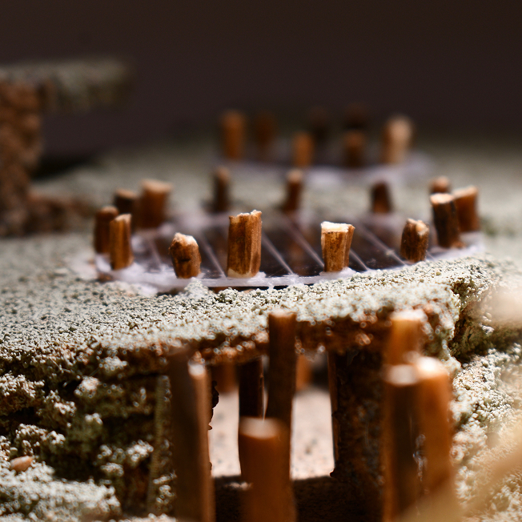
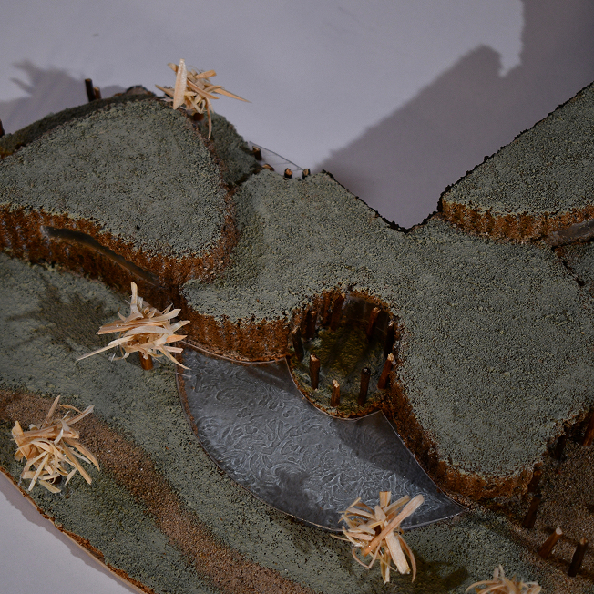
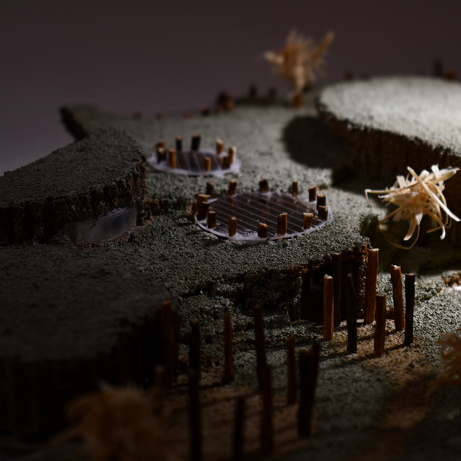
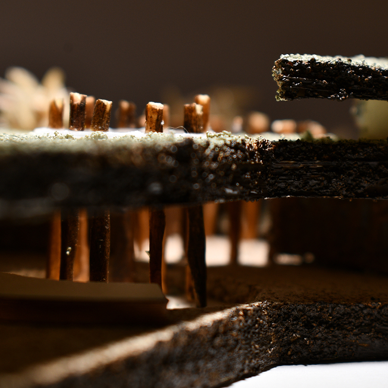
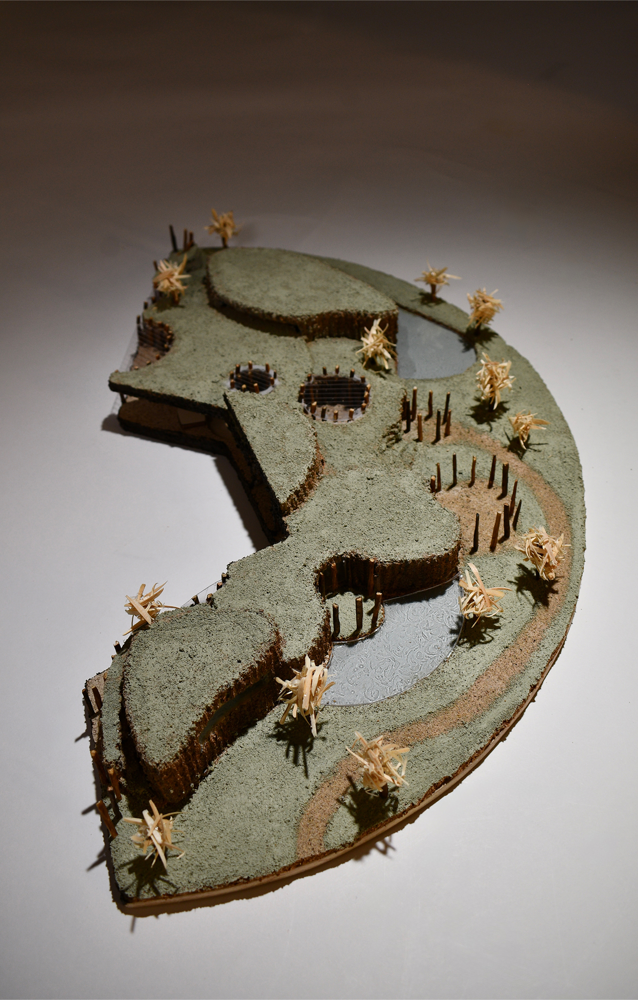

BUILT TO SCALE
Parts of the design were tested in the model: how the forms link, how the openings let in light, and how the logs hold the roof. These photos show what drawings can’t: the depth of the building and textures of the materiality.
SCROLL TO VIEW GALLERY ↓

FORM. The building cut in “section” as a row of connected, overlapping forms.

FORM. Shows how the shapes link and how the trail-side edge follows the land.




OPENINGS. The circular cutouts, where the roof, light and movement meet the interior.


AERIAL OVERVIEW. From above, the building reads as part of the landscape: a singled curved form, edged in timber, set into the hill.